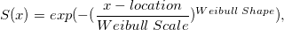

生存分析には3種類の手法があります。ノンパラメータ法、セミパラメータ法、パラメータ法の3つです。ワイブルフィットは、生存関数と故障時間の間の関係を分析するパラメータ法の1つです。
パラメータの見積もり分析のテーブルから、生存関数と故障時間の間の関係を知ることができます。生存関数の値は下記の方程式から求めることができます。

Originでは、Weibullフィットは尺度パラメータと形状パラメータについてのみ説明し、位置パラメータ= 0と仮定します。
時間/打切り範囲に、欠損値がある場合、全てのケースが分析から除外されます。
ワイブルフィットを実行するには
|
このセクションで説明している項目 |